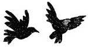

10 Ağustos 1928
Yemek bitince sedirin etrafında toplandılar, Müzeyyen Babaanne de dâhil. Erim kitabı yüksek sesle okuyordu, kimi zaman kahkahayla gülüyor kimi zaman heyecandan kıpkırmızı oluyorlardı. Maceranın en civcivli zamanlarında kitabın küçük kahramanları tehlikeye düşünce babaannenin sesi duyuluyordu:
— Euzübillahimineşşeytanirracim bismillahirrahmanirrahim. Kul e’ûzü bi-rabbin nâsi melik’in-nâsi ilâh’in-nasi min şerril ves’vas’il hannasi ellezi yüvesvisü fi sudûr’in-nâsi minel cinneti ven-nâs.
En çok ikizler gülüyordu o zaman.
— Babaanne, bu gerçek değil! Dua etmene gerek yok, hikâye işte.
— Olsun kızım, ben okuyum da ne olur ne olmaz.
Hepsi kahkahaya boğuluyordu. Nisan’ın gelmesi, neşelerini çok arttırmıştı. Zafer, akşamları babası Yusuf Amca almaya gelince istemeye istemeye gidiyordu. Sabah erkenden kapıyı tıklatıyor, babaanneyle beraber kahvaltıyı hazırlıyordu. Babaanne de çok mutluydu, yıllardır oğlunu ve gelinini kaybetmenin acısıyla torunlarına sarılmıştı. Onu, bu üç afacan hayatta tutuyordu. Doğrusu oğlunun kitabı ve çocuklara verdiği görev onu da canlandırmıştı. Aslında üç gündür oğlu Erdoğan da sanki çıkıp eve geri dönmüştü; varlığını, kitaptaki kelimeler evin içine doluştukça hepsi hissediyordu. Sanki akşamları kitap okurken konuşan Erim değil de oğlu Erdoğan’dı. Aynı duyguyu çocuklar da hissediyordu. “Kitap yazmak, elbet yaşamak gibi” dedi kendi kendine. “Nasıl babaanne; yufka açmak, gözleme yapmak gibi mi dedin?” diye sordu Zafer. Kahvaltı etmediği için her şeyi yanlış duymaya başlamıştı. Gülümsedi, “Onun gibi bir şey dedim Zafer.”
Patır patır çocuklar merdivenlerden indiler, hopur hupur kahvaltılarını ettiler, güle oynaya bahçeye koştular. Yanlarına gerekli öteberiyi aldılar. Gidecekleri yol uzun olduğu için ikizler evde kalacaktı. Arkalarından mahzun mahzun el salladılar, “Şinasi Amca’ya selam söyleyin” dediler. Sanem arkalarından bağırdı:
— Arap Amca sizi gizlice takip etmesin, dikkat edin!
— Gece olsa gizlice takip edebilir ama gündüz görürüz merak etme, gündüz feneri o.
Güldürdü herkesi Zafer.
Erim’in yanındaki çantada tablet, kitap ve metal çark vardı. Zafer tabii ki yiyecek içecek sepetini, Nisan da not almak için kalem ve defter almıştı. Başında beyaz bir şapka vardı güneş geçmesin diye, çok yakışmıştı doğrusu. Çocuklar tramvayla Eminönü’ne gittiler. Galata Köprüsü’nün altından, boğazdaki iskelelerin çoğuna uğrayarak kavaklara kadar giden vapura bindiler.
— Bundan çok değil, on yıl önce buralarda İngiliz savaş gemileri vardı, dedi Erim.
Çengelköy İskelesi’nde onları Miralay Şinasi Amcaları karşıladı. Sarıldılar.
— Ne kadar da büyümüşsünüz gençler!
— Aman Şinasi Amca, daha bir ay önce gördün bizi, hep böyle söylersin sen.
— Yok yok, boy atmışsınız hepiniz de. Nisan, seni görmeyeli belki bir yıl oluyor; zaten güzeldin, iyice güzelleşmişsin.
Nisan’ın yanakları kızardı,
— Teşekkür ederim Şinasi Amca.
Çengelköy İskelesi’nden Kuleli Askerî İda-disi’ne[13]. kadar yürüdüler. Kuleli görününce Erim, bu güzel binadan çok etkilendi. Erim’in okula nasıl baktığını görünce Şinasi Efendi eğildi ve “Babanla beraber okuduk burada, hem de aynı sırada. İstersen birazdan oturduğumuz sırayı da gösteririm” dedi. Erim’in yüzüne müthiş bir ışıltı geldi. Önce okulu gezdiler. Miralay Şinasi Efendi orta boylu, sağlam, yapılı, kalınca kaşları, yuvarlak yüzlü, genelde sert bakışlı –gördüğünüz ilk anda çekinebilirsiniz–, sağlam karakterli, mert bir Türk subayıydı. Çanakkale, İstiklal Harbi, ondan önce Trablusgarp ve Balkanlarda da savaşmıştı. Diller ve tarih konusunda uzmandı. Ondan fazla dil bildiği söylenirdi.
Bir duvara asılı öğrenci listesiyle karşılaştılar. Şinasi Albay listenin önünde durdu.
— Bu gençler kim biliyor musunuz çocuklar? İstiklal Harbi’nin bir gecesi bu on beş-on altı yaşındaki gençler gidip, İngilizlerin silah deposunu basıp, başlarındaki sınıf subaylarıyla beraber silahları ele geçirip bu şanlı yuvaya, Kuleli’ye döndüler. Sabah erkenden Anadolu’ya yola çıkıp Gazi Mustafa Kemal ve silah arkadaşlarına katılmayı planlamışlardı. Fakat İngilizler durumu haber alınca Kuleli’ye baskın düzenlediler. Baktılar ki karşılarında çocuklar var, silahlara el koyup sınıf subaylarını hapse attılar. Kuleli öğrencilerini de serbest bıraktılar, nasıl olsa bunlar bir şey yapamaz diye düşündüler. Aynı gece gençler yine baskın düzenlediler İngiliz kışlasına. Silahları aldılar, bu sefer Kuleli’ye uğramadan Anadolu’ya doğru yola koyuldular bu yiğit delikanlılar. Ankara’ya ulaştılar, Cebeci’de dört ay hızlı bir eğitim görüp subay oldular. Ufacık yaşlarda ordu saflarına katıldılar ve İstiklal Harbi’nde savaştılar.
Derin bir nefes çekti Miralay Şinasi, listeye baktı, gözleri nemlendi.
— Şimdi yaşasalar yirmi altı-yirmi yedi yaşlarında olacaklardı. İstiklal Harbi’nde hepsi şehit oldu. Anladınız mı gençler, nasıl kovduk düşmanları bu ülkeden? Olamazdı başka türlü... Siz belki savaşmayacaksınız, inşallah savaşmak zorunda kalmazsınız. Bilin ki bütün büyük devletler, bu ülkeyi küçük düşürmek için ellerinden geleni hep yapacaklar. Öyleyse yapabileceğimiz en önemli fedakârlık; çok candan, çok içten çalışarak işimizi iyi yapmak. Bunun yanı sıra belki ağaç dikmek, belki işyeri açmak, başkalarına yardım etmek, ülkemizi daha iyi ve yaşanır hâle getirmek için çaba göstermek olmalı. Şinasi Amca sözlerini bitirdiğinde, üç arkadaşımızın da gözleri dolu doluydu. Yumruklarını sıkarak, “Söz veriyoruz Şinasi Amca!” dediler.
Erim,
— Söz veriyoruz; işimizi çok iyi yapacağız ve Türkiye Cumhuriyeti daha güzel, daha yaşanır bir yer olsun diye çaba göstereceğiz!
Zafer’le Nisan, Erim’in ellerini tuttular, kenetlendiler. Afacanlar listedeki isimleri okuya okuya bitiremediler.
Şinasi Amca’nın kuzey kulenin hemen altındaki odasında oturdular. Buradan tüm boğaz ve yemyeşil Rumeli sırtları görünüyordu. Karşı kıyıda tek tük evler vardı.
“Şinasi Amca, senden bir yardım istiyoruz” dedi Erim; çantasından kitabı, kil tableti ve çarkı çıkardı. Başlarından geçenleri Nisan anlattı. Aralarında en düzgün konuşan oydu doğrusu, Zafer ancak karnı tok olduğunda güzel konuşuyordu.
Albay Şinasi kil tableti inceledi, durdu, pencereden dışarı baktı. “Yıllardır bu anı bekliyordum çocuklar” dedi. Duvardaki resmi kaldırdı, duvar kâğıdını çakısıyla söktü, kâğıdın arkasından gizli bir kasa çıktı. Dikkatlice kil tabletin üzerindeki numaraları çevirdi: 5-4-9-6 ve kasa tıkırt diye açıldı, içinden mühürlü bir sarı zarf çıktı.
— Mektupta ne yazdığını görmemi isteseydi Erdoğan zaten bu mektubu bana verirdi dostlarım. Çok ama çok merak etmeme, yıllardır bu sırrı saklamama rağmen mektuptaki yazıyı ben okumamalıyım. Bu mektup on yıldır burada seni bekliyor Erim. İçinden benim yardım edebileceğim bir şey çıkarsa hiç tereddüt etmeyin, bana anında ulaşın, her şeyi bırakır yıldırım gibi yetişirim. Öte yandan, baban sana o denli güveniyor ki bu görevi sana verdi. Göreyim oğlum seni, eminim çok önemli bir görev sizi bekliyor. Kalbiniz sıcak, beyniniz soğuk olsun. Bir olduğunuzu unutmayın, hep akıllıca düşünün. Babanız takip edildiğinizi söylüyorsa o dönemden itibaren bu işin peşinde olan kötü niyetli insanlar ve düşmanlar olabilir.
Çocuklar büyük bir heyecanla Şinasi Amcalarını dinliyorlardı.
Erim,
— Şinasi Amca, artık öğrenecek yaşa geldim; nasıl öldü babam? Yani şey...
Gözleri dolu dolu olmuştu.
— Oğlum, bunu sana gururla anlatırım. 23 Ağustos 1921’de Sakarya Meydan Muharebesi’ne başladık, başımızda Mustafa Kemal. Bize, “Yanınıza gıda almayın” dedi, tüm zabitler şaşırdık. Bu çapta bir savaşa yanımıza gıda almadan çıkmak delilik gibi bir iş. Pikniğe giderken bile yiyecek alıyorsun. Belki dört-beş ay sürecek bir savaş. Mustafa Kemal, “Düşmanı öyle bir basacaksınız ki yemeklerini bırakıp kaçacaklar. Bizim asker, Yunanlının yemeğini yiyecek” dedi. Hepimiz inandık. Gerçekten çok çetin savaşlar oldu. Tüm askerler merminin, süngünün üstüne atlıyordu neredeyse. Kadınlar mermi taşıyor, fakir halk son tavuğunu, son yoğurdunu askere veriyordu. Savaşın son günü, yani 13 Eylül günü vurulduğunu haber aldık Erdoğan’ımın. Koşarak gittim yanına. Bir askeri vurulmuş, onu korumak için siperden çıkmış, üstüne kapanmış, Yunanlı da rütbeli subayı açıkta görünce yağdırmış mermiyi. Yanına geldiğimde kendi hâline bakmadan, “Nasıl Mehmet’in durumu?” diye sordu. “İyi. Sen nasılsın asıl?” dediğimde, “Şinasi, başka türlü evlatlara kalmazdı bu vatan. Hepiniz hakkınızı helal edin, evlatlarıma, eşime iyi bakın. Onlarla, hepinizle gurur duyuyorum. Bir şekilde Erim sana gelemezse o mektubu aç ama dikkatli ol, gizli hareket et” dedi. Sonra gözlerini kapadı. “Bilen kalmadı, bilen kalmadı” diye sayıkladı. “Neyi bilen kalmadı?” diye sordum, “Bilen kalmadı” dedi ve yüzünde bir gülümsemeyle hayata veda etti. Yüzünde öyle bir huzur, öyle bir mutluluk vardı ki çocukluk arkadaşımı, can yoldaşımı kaybetmiştim ama bana ağlama şansı bırakmadı. “Görüşürüz aslanım, oralarda cennette” dedim, sarıldım son defa. Sonradan öğrendim ki o korumaya çalıştığı asker, birliğinde sağ kalan son askermiş. Aynı birlikte, yıllardır her yerde –Çanakkale’de de– savaşmışlar. Birliğindeki herkes şehit olmuş, bir o asker kalmış geriye; onu korumak istemiş. O asker Mehmet’in bildiği her ne idiyse öğrenemedim.

Üç cesur gencin de gözlerinden sicim gibi yaşlar geliyordu. Bu sefer Albay Şinasi de ağlıyordu.
Zafer döndü, burnunu fırk fırk çekerek,
— Mektup ıslanmasın azizim.
Dördü de gülümsedi, Zafer tamamladı:
— Görev aşkı –fırk– azizim!
Şinasi Amca çocuklara, padişahlara layık şahane bir öğle yemeği yedirdi okulda. Siz şimdi padişahlara layığa inanmayabilirsiniz ama Padişah Vahdettin ülkeyi terk edince saray çalışanları çeşitli devlet kuruluşlarına geçmişti. Sarayın aşçısı da o dönem Kuleli’ye geldiği için gerçekten padişaha layık yemekler yendi Kuleli’de yıllarca. Şinasi Amcaları, onlara Çengelköy İskelesi’ne kadar eşlik etti. Okul nizamiyesinden çıkarken kapının üzerindeki Kuleli Marşı’nı okudu gençler:
— Deniz senin, toprak senin, gök senin, Zafer olsun en mukaddes emelin.
Çağlayanlar gibi köpür arşa taş,
Ufuklardan yüksel şahikalar aş.
Ey şerefli, yuva şanlı yuva Kuleli,
Hedefindir bütün cihan ileri.
Gençler, bu yeni görevin heyecanına kendilerini o denli kaptırmışlardı ki okul çıkışında Çengelköy Camisi’nin duvarının arkasına gizlenmiş Arap’ı ve onları vapura kadar nasıl izleyip gizlice aynı vapura bindiğini fark etmediler bile.